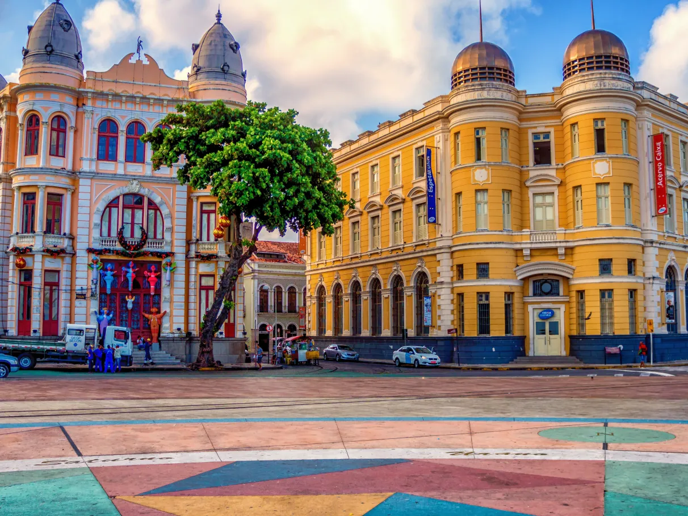

Explore um dos pontos turísticos mais emblemáticos do Nordeste brasileiro
O Marco Zero é o ponto inicial das medições das distâncias do Recife para outras cidades, e também é o coração cultural da cidade. Localizado no bairro do Recife Antigo, ele é palco de eventos culturais, shows, feiras de artesanato e muito mais.
